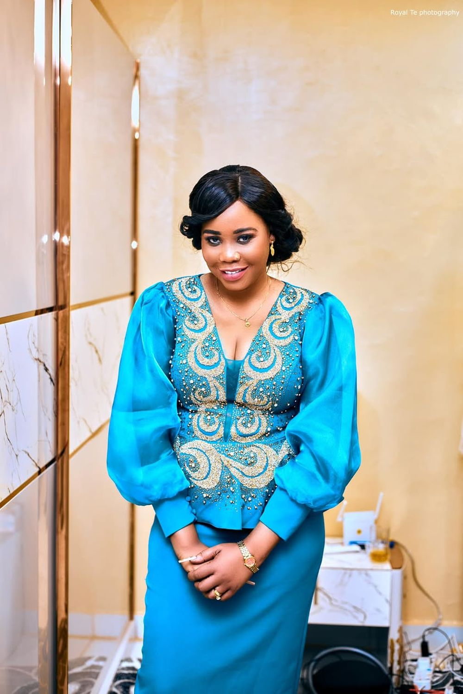

Foundation social post · Jul 2021
IDP support documented in Mangalla
The only official Foundation post currently on record for this site. Quantities and partners are not yet confirmed — see the Impact Archive entry.
View the official post ↗News & Media Centre
Everything a journalist or partner needs in one place — clearly separated by who published it, and what's still working copy.
01From the Foundation's own channels
Foundation social post · Jul 2021
The only official Foundation post currently on record for this site. Quantities and partners are not yet confirmed — see the Impact Archive entry.
View the official post ↗This list reflects only what was supplied for this build — it is not a claim that the Foundation has posted nothing else.
02Independent record
Eye Radio · 14 Jan 2022
Coverage of the January 2022 distribution across three orphanage centres.
Read on Eye Radio ↗Radio Tamazuj · 18 Jan 2023
Coverage of the 98-tricycle distribution and related food support.
Read on Radio Tamazuj ↗Eye Radio · 21 Jul 2021
Coverage of the partnership with the South Sudan Islamic Council.
Read on Eye Radio ↗03Media kit
Every biography length below is working copy pending Achai's and the Foundation's approval — usable for planning a story now, not for direct, uncredited republication yet.
Achai Wiir is a South Sudanese public figure and founder of the Achai Wiir Foundation, supporting disability inclusion, child welfare, and emergency relief across South Sudan. Reported activity includes distributions in Juba and Aweil and a 2021 debt-clearance partnership with the South Sudan Islamic Council.
Achai Wiir is a South Sudanese public figure and the founder of the Achai Wiir Foundation, an institution built around direct, hands-on community support across South Sudan. Her reported activity spans disability inclusion and mobility, child welfare, and emergency relief — including a January 2022 distribution of food and essential items to more than 300 children across three Juba orphanage centres, a January 2023 distribution of 98 tricycles to persons with disabilities in Aweil, and a July 2021 debt-clearance initiative undertaken jointly with the South Sudan Islamic Council that led to the release of eight people from detention. The Foundation's program work is documented on an ongoing basis as verified reports become available.
Achai Wiir is a South Sudanese public figure and the founder of the Achai Wiir Foundation, an institution built around a direct, hands-on model of community support across South Sudan. Rather than a single flagship program, her reported activity spans several categories of need — disability inclusion and mobility, child welfare, and emergency relief — delivered in specific places, on specific dates, frequently in partnership with local and institutional actors rather than as unilateral gestures.
Three activities are independently reported and verifiable as of this writing: a January 2022 distribution of food and non-food items to more than 300 children across three orphanage centres in Juba (Eye Radio); a January 2023 distribution of 98 tricycles to persons with disabilities in Aweil, alongside food packages for blind and deaf community groups (Radio Tamazuj); and a July 2021 initiative, undertaken jointly with the South Sudan Islamic Council, that led to the release of eight people held in detention over outstanding debts (Eye Radio). A further location, Mangalla, appears in the Foundation's own social channels as a site of IDP support in July 2021, with quantities and partners not yet on the public record.
The Achai Wiir Foundation carries this work forward across four working categories: disability inclusion & mobility, children & community care, emergency & relief support, and dignity, access & pathways to opportunity. Governance, registration, and founding-date detail are not yet publicly documented and are presented as pending rather than invented.
Reference-only, pending rights clearance — not yet cleared for external publication. Contact Media for approved, high-resolution assets and a credit line.

Reference · pending clearanceReference image — not cleared for publication
 Reference · pending clearance
Reference · pending clearanceReference image — not cleared for publication
Proposed concept, drawn from this site's monogram — pending Foundation approval
Suggested credit line once cleared: “Courtesy of the Achai Wiir Foundation.” Confirm exact wording with the Media contact before publication.
Media enquiry
Interview requests, fact-checking questions, and asset requests all route here to a named media owner. Expected response time: 3–5 working days (sooner for a stated deadline).